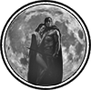

|

|
>> Содержание / Список кланов /
 MWR MWR
Есть вечные вещи под этим небом. Которые не избыть и не изменить. Вроде и меняется что-то, становится другим и непохожим. Но есть и другое. И построено "вечное" на "простом". На человеческом. Странно как-то, но это так. Уж как мы приспособляемы, уж как мы податливы и гибки. Ан нет. Глина иногда бывает тверже камня.
Холодны ночи в молодых городах. Кто-то забивается за стены, грея свои кости и попивая хмельное. А кто-то согревается кострами. Как всегда, костры пригрели на входах небольшие группки проводников. И поговорить можно спокойно, без разного несерьезного люда, а с такими же, как ты, и с утра не надо тащиться с грязных лежанок снова на Вход, когда набивается тут народу тьма. Лучше ночь погреться, чем полдня потом пробиваться. Главное, теплей укутаться, главное, не перебрать брода, не для хмеля же, а для сугрева он. Все, как всегда. То небольшое, что приходит с опытом.
Ночь откинула 3 тени, костер заиграл бликами на плащах и на оружии незнакомцев, проводники подсобрались, притихли незатейливые разговоры. Клановые. Старшие. Принесла же их нелегкая.
- Мир костру вашему, да поярче звезд на вашей крыше! – правильной фразой откликнулся первый незнакомец, держа в одной руке связку поленьев, а вторую протягивая к костру. Странно. И поприветствовал правильно, как проводники, и к костру уважение проявил. Другие шагнули следом.
- И тебе наутро с нами быть – ответили недружно в смятении. Какие на утро им вождения? Но ответили, приглашая. И по своему.
Первый незнакомец усмехнулся, пододвинул к себе чурбак, присел напротив. Другие немного помешкали, но тоже нашли себе место. Теперь можно разглядеть незваных гостей полностью. От глаз не скрылся медальон главы, не скрылись и боевые посохи других старших. Муны. Дети Луны, ею воспитанные, ею же движимые. Как говорили сами бойцы из этого клана, защитницы серых, младшей Богини. А в народе уже прозываемой Лунной Девой, так как светила она в ночи, даруя свой неяркий свет, как надежду. Здесь им было зачем появляться. Единственная из гильдий, что сохранилась еще до Великих Сумерек, была из лунного города.
- Чем живете, проводники? – начал разговор первый, слегка трогая губы улыбкой.
- Да живем, как живем, что у нас интересного может быть? – в тон ему ответил молодой проводник, набравшись храбрости, – вам то, наверное, поболее что рассказать можно!
- Да чего уж рассказывать? Тоже все как обычно. Ходим по свету. Растем. Собираем. Учим. Вот, в гости к вам прилетели, да и своих попроведовать. А то балуют, говорят, слышали что? – хитро прищурившись, ответил глава.
Хе-хе, ну вот и можно немного напакостить гильдийцам! Про то, что и не стоят они на Входах. Что бьются все на ристалищах. Что и водить то разучились, а только зовутся проводниками, что возле костров уж не греются, как раньше было. Другими они стали. Много чего высказываться стало. И слушали трое, угощая все и вином, и жареным мясом, просто слушали. И разговаривали они, как свои, и над шутками смеялись как свои. Да и вели себя, как свои. Простые и понятные.
Старшие встали. Проводники тоже. Поклонились друг другу.
- Ну, спасибо вам, любезные, за костер и за разговор всем! Пойдем уже, а то светает. Будете в наших краях, обращайтесь – сплюнул, сквозь пальцы, в сторону, чтобы было кого водить оставшимся, подкинул ветку в костер и ушел. Другие ушли следом.
Долго еще обсуждали гостей оставшиеся. А молодой проводник, что первый ответил, молча смотрел на огонь. Ни о чем таком не говорили гости ночные. Ни про себя, ни про дела свои. Знали многие в молодых городах, что тяжко было им. Как тяжело серым сейчас в Сумерках, кто ж не знает? Многие сейчас к темным идут. Много сейчас несправедливости, нет правды кругом, Сила сейчас Правдой стала. Но сильнее невзгод для детей Луны была дружба внутри клана. Как бились они друг за друга зло, как помогали друг другу крепко. Как молодых учили, не щадя их. Как росли они. Хоть и молодой клан у них, да только не простой. Из простых ребят созданный. Кто цену хлебу знает преломляемому, кто знает цену медяку, сколько пота тот стоит, другим его отдавая.
Официальный сайт клана: http://moonwarriors.ru
|
 |
|